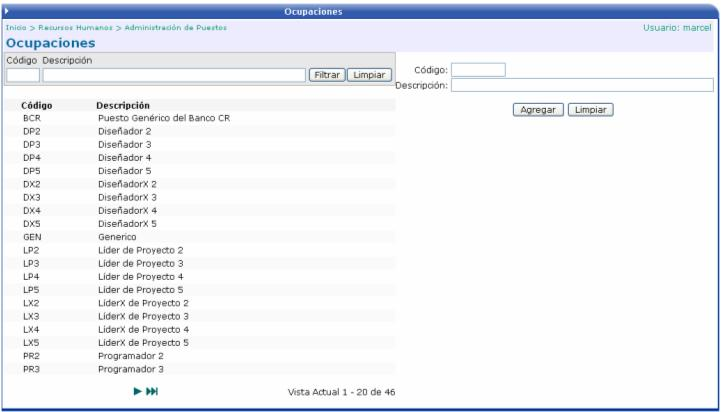

Las ocupaciones que aquí se definan son los códigos que maneja la Caja del Seguro, para cada una de las profesiones existentes.
Aquí se crea el catálogo de los códigos equivalentes de los puestos que se crean en el sistema, con los códigos que tiene la Caja del Seguro.
Lo único que se tiene que hacer es digitar el código y la descripción del puesto.
